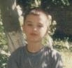
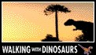

Hompejgji i Arbërit
ARBËR KRYEZIU
DINOARBI
Dinosauri im më i pëlqyer është Iguanadoni.
Prodhuar më;
1 janar 2003
Kontakto me mua në e-mailin tim:
kapreboys6@hotmail.com
|
|
|||
Hompejgji i Arbërit |
ARBËR KRYEZIU |
||
DINOARBI |
Unë quhem Arbër Kryeziu. Kamë lindur më 13.09.1988 (13) në fshatin Kapre të Kosovës. Shkurt, unë shkollën fillore jam duke e ndjekur në Bellobrad në shkollën ''Sezai Surroi'' më sukses të shkelqyer. Sa për dinosaurët, unë me njohurit e tyre jam nisur të merrem që në moshën 10 vjeçare nga filmat me dinosaur që i kamë ndjekur në tv. Disa nga filmat më të pëlqyer të dinosaureve janë: ''Jurassic Park I" , "Jurassic Park II'' ,"Jurassic Park III" & '' DINOSAUR'' dhe shumë emisione tjera për dinosauret si një emision i pregaditur nga BBC World dhe Pro Sieben i cili quhet ''Shëtia me Dinosauret'' të ndara në 6 seri. Për më shumë njohuri për këto emisione mund ta vizitoni faqen e internetit
Dinosauri im më i pëlqyer është Iguanadoni. |
||
|
Prodhuar më; 1 janar 2003 Kontakto me mua në e-mailin tim: |